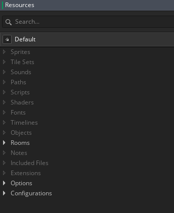
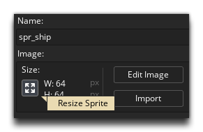
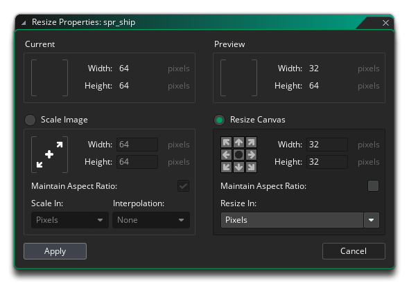
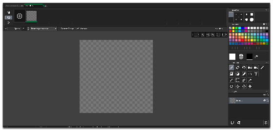
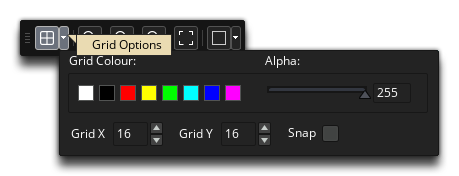
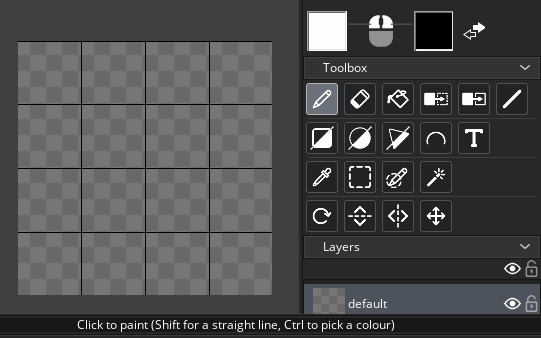
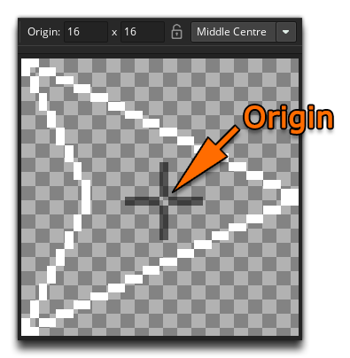
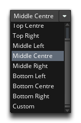
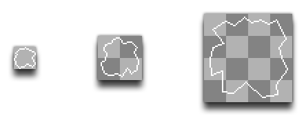

The first sprite we'll make is the "ship" sprite for the player to control. To do this, go to the "Sprites" resource and click the right mouse button  and select Create:
and select Create:

This will open the sprite editor and permit you to set the name of the sprite. In this case we'll call it "spr_ship", as shown in the image above.
You may now also need to resize the sprite, as for this game we want it to be 32x32px. To resize a sprite, you simply click on the Resize Sprite button to open up the resize window:

You'll want to choose the Resize Canvas option and set it to 32x32px:

With that done, the next thing to do is create our sprite in the Image Editor. You can open this by clicking on the Edit Image button, which will bring up the editor with a blank canvas ready for you to start drawing:

Our sprite is going to be a simple line-drawn polygon, much like an arrow head, so let's draw that now. First you should probably enable the grid overlay and set the grid to 8x8px (this will help you to position the drawing tool):

Now we can draw the sprite using the Draw Polygon tool (be sure to click the top left of the icon to get the outline tool and not the fill tool):

Once you're happy with the result, simply close the Image Editor workspace and the image will be saved to the sprite. We now need to set the sprite's origin, which is the value which will be used as its top-left position when it is drawn in-game. We want our ship to rotate around its middle, so we need the origin at the centre of the sprite.:

You can see the sprite editor allows us to change this in several ways, but go ahead and select the Middle Centre option from the drop-down menu in the Sprite Editor.

We can now go on and make the asteroid sprites. So, for this, you'll need to create three new sprites, as we are going to make three different sizes of asteroid. Call the sprites "spr_asteroid_small", "spr_asteroid_med" and "spr_asteroid_huge". All the sprites will have been created at the default image size, so you will want to change their size to be 16x16px, 32x32px and 64x64px respectively (as shown at the beginning of this article). When finished, you can take a moment to draw the asteroids, again using the outline polygon tool to create some irregular shapes. You can see some examples below (shown at twice the size required for the game):

When finished, make sure the origin for each of the sprites is set to Middle Centre. The idea now is that the asteroids in our game will start of huge and then break into the medium and smaller parts as the player shoots them.
It's now time to make some objects, so click "Next" to continue...